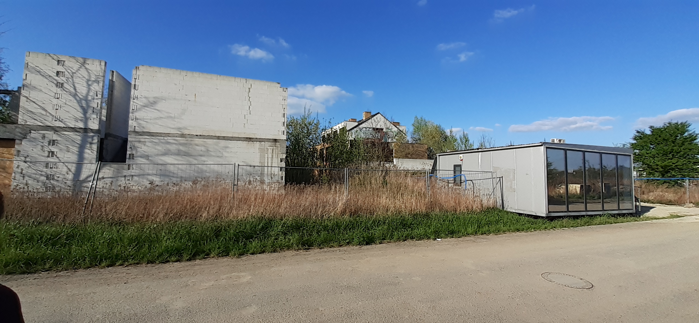
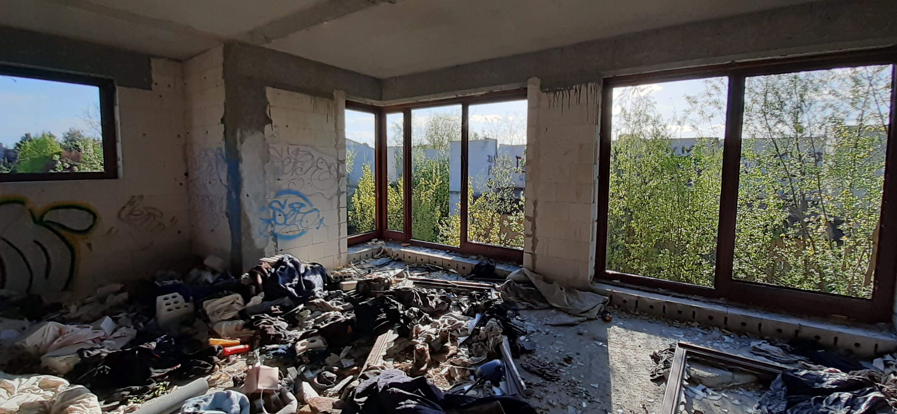
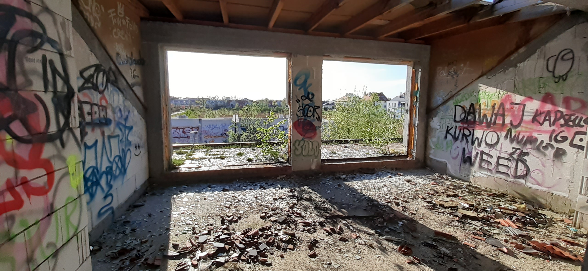
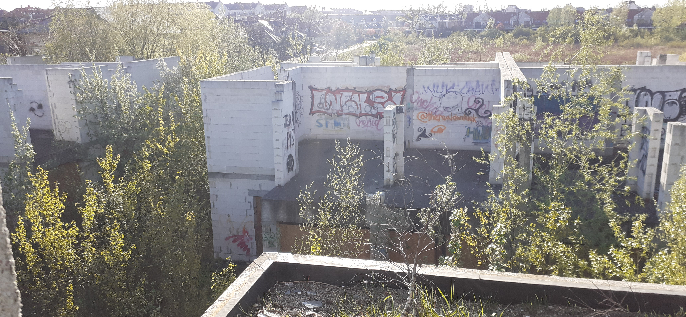
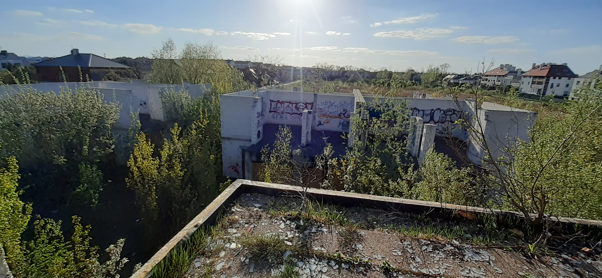
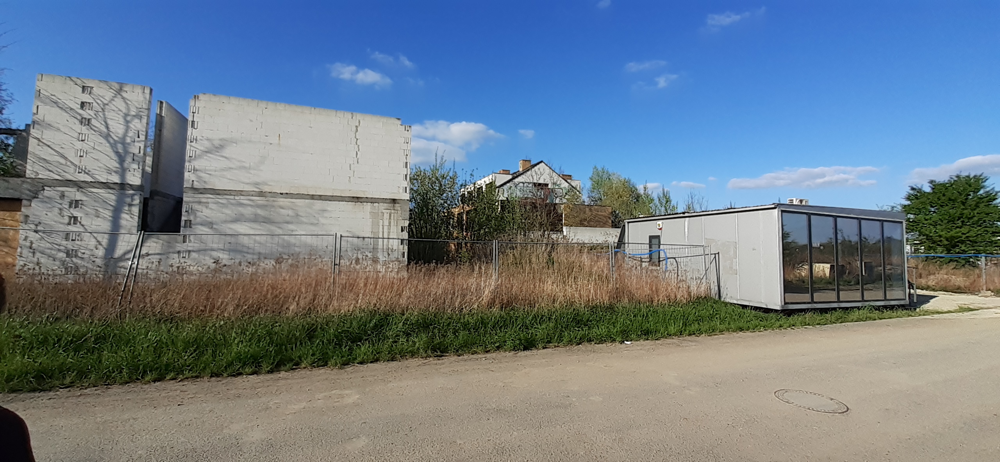
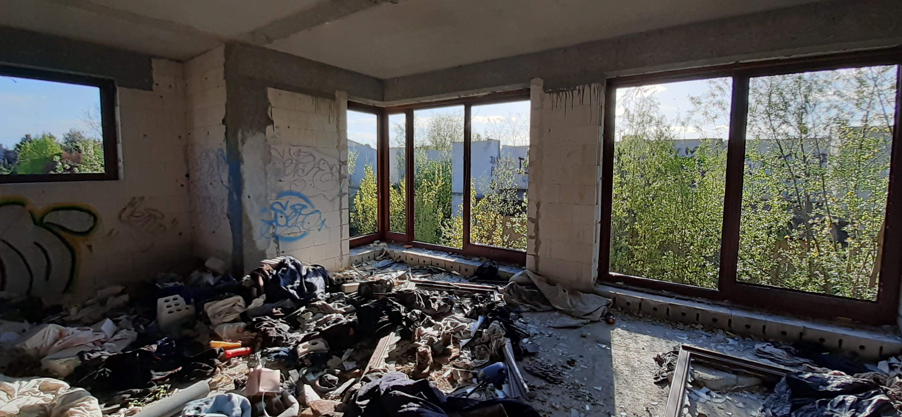
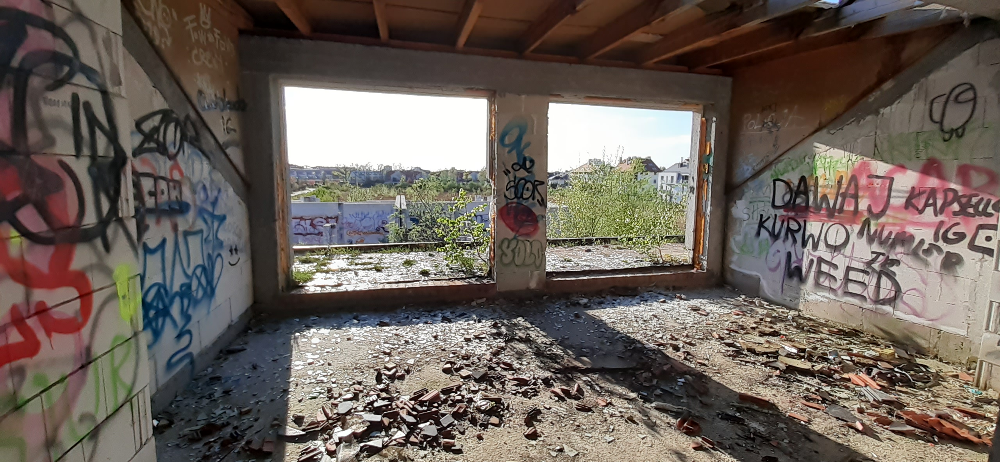
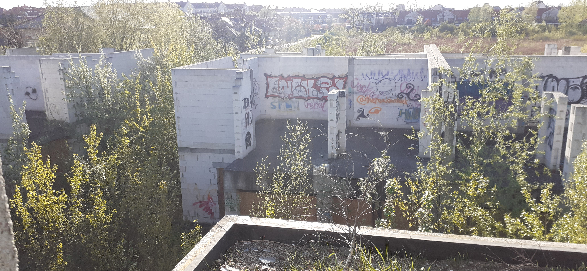
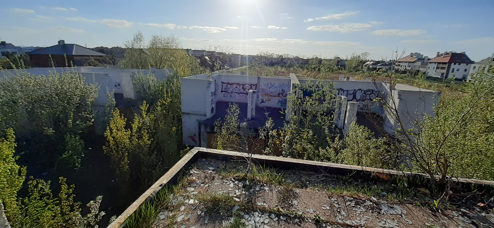

Jest to opuszczony Dom, a raczej blok mieszkalny. Kiedyś żył tam Żul o imieniu Marek - dobry gość)))
Wokół są niedokońzone zabudowy z białej cegły, są opuszczone.
Pozdrawiam, miłego zwiedzania.

 








